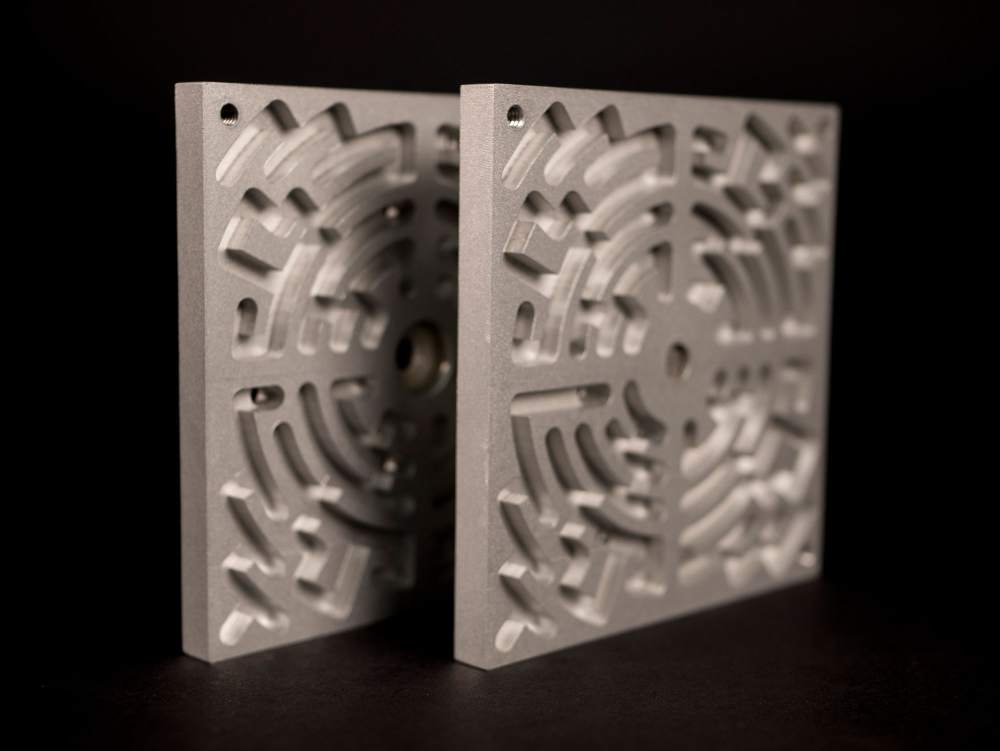

Autumn 2018
For ME318, the design and CNC machining class at Stanford, we were tasked with creating a maze from
a block of aluminum. In considering maze concepts, I focused on introducing a new mechanic to a puzzle
that would ordinarily only be controlled by 2 axes of rotation and gravity. I felt that adding a degree
of control would make the maze format more dynamic. After considering physics ideas ranging from filling
the maze with water to using magnets, I went with adding another rotational degree of freedom. This supported
the realization of the video game concept in multiple ways. By giving users a physical interface, there
exists more tangible control. Forcing players to flip the maze over replicates the concept of “dungeons”
that are rendered on screen every time the character passes through a door. Pacman was a huge inspiration
for the maze concept. Another aspect that was ultimately cut from the final version was the use of “enemies”
in the form of other balls in the maze that you had to avoid. This was designed to reflect randomly spawning
enemies in dungeons, but it made the already difficult maze very overwhelming.
Starting from one of the disconnected paths (separate from the section within the same quadrant), you have to make it to
the other one on the bottom side. Each section has two gates, and the key idea is that you have access
to all other gates on the same radii on either side. It takes a minimum of four gates to finish the maze.
The inclusion of specific hardware increased the complexity of the design immensely but also greatly improved the tactility
of the maze. There are four magnets on the back of each half of the maze so that they “click” in place
after each quarter turn. The steel dowel pin and the nylon bushing ensure smooth rotation.

Glass bead blasted finish